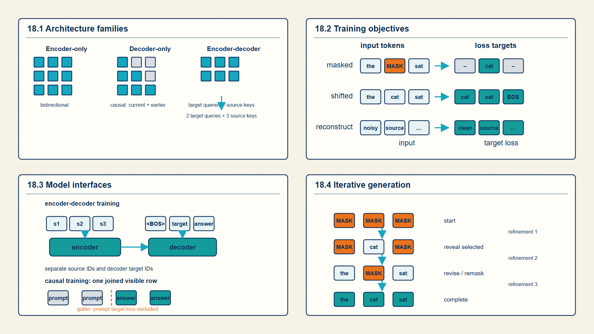
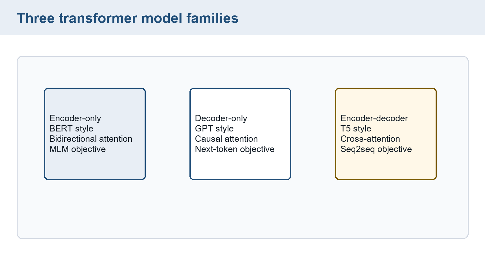
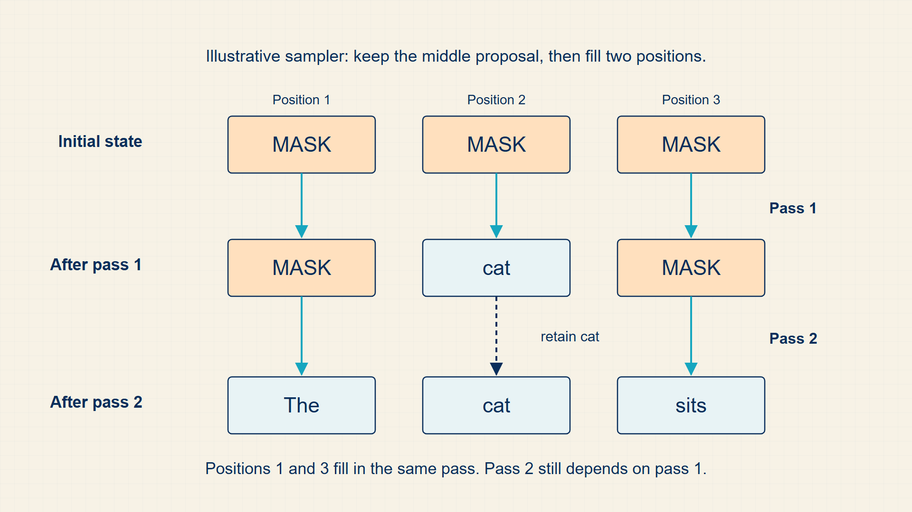

18 Transformer Topologies: Choosing the Right Architecture
Connect architecture visibility with objectives and distinguish compression choices.
Transformer models differ mainly in which positions may exchange information and what they are trained to predict. Those choices determine whether a model is built for representation, continuation, or sequence-to-sequence work.
In code, transformers model classes expose encoder-only, causal-decoder, and encoder-decoder masks and heads; their configuration selects the architecture and training interface.

18.1 Matching Transformer Architecture Families to Tasks
The same transformer block components support different model families when attention visibility and training objective change.
- Encoder-only: A bidirectional transformer used for representation and masked-token prediction.
- Decoder-only: A causal transformer used for left-to-right generation.
- Encoder-decoder: A conditional sequence model with an encoder for source input and decoder for target generation.
The family distinction is a visibility rule. Encoder-only models can see both directions in the input. Decoder-only models cannot see future tokens. Encoder-decoder models add cross-attention from target positions to encoded source states.
The family name describes information flow, not a unique task. An encoder-only model creates bidirectional representations that can feed a classifier or token-labeling head. A decoder-only model creates causal representations for next-token generation. An encoder-decoder model builds source representations once and lets target queries use cross-attention while generating the output sequence.
The architecture choice does not by itself determine the application. A decoder can answer questions, summarize, or write code because each task is expressed as conditional next-token prediction. An encoder can classify sentiment, assign token labels, or retrieve passages because its output is a contextual representation rather than an autoregressive continuation.
Example: How three transformer families connect input to target
The attention block is shared, but the visible context and training target differ across the families.
Encoder-only classification:
Input: all tokens of one review.
Visibility: every token may read both left and right context.
Output: one pooled vector followed by class logits.
Target: the review label.
Decoder-only language modeling:
Input: tokens \(x_{1}\) through \(x_{t}\).
Visibility: each position reads the current input token and earlier positions while predicting the following token.
Output: vocabulary logits at every eligible position.
Target: the next token \(x_{t+1}\).
Encoder-decoder translation:
Input: source sentence to the encoder.
Decoder query: earlier target tokens.
Cross-attention reads encoded source vectors.
Target: the next target-language token.
The model family changes which vectors are visible to an output position; the task chooses the output head and loss.
Information flow determines which positions a model can use. The training objective determines what prediction is made from that information.
18.2 Masked Bidirectional Pretraining vs Causal Next-Token Pretraining
A transformer family is defined not only by its attention visibility but also by the prediction objective attached to its logits.
- Causal LM: Predicting each token from previous tokens.
- Masked LM: Predicting hidden tokens from visible bidirectional context.
- Sequence-to-sequence: Predicting a target sequence conditioned on an input sequence.
Encoder-only models usually learn by reconstructing masked tokens from bidirectional context. Decoder-only models learn by predicting the next token from previous tokens. Encoder-decoder models learn to produce an output sequence conditioned on an input sequence.
The objective determines which positions produce supervised loss and which mask is legal. That is why the same block components can support different model families without making the training computation identical.
For decoder-only next-token training, the input and label tensors are shifted copies of the same sequence. Position t receives token \(x_{t}\) as input and predicts \(x_{t+1}\) as the label. Padding labels are ignored with the same masking rule introduced earlier.
Decoder-only training supervises next-token prediction.
Causal LM objective:
\[ L_{\mathrm{CLM}}=-\sum_t\log P_{\theta}(x_t\mid x_{<t}) \tag{18.1}\]
where \(x_{t}\) is target token at position t; \(x_{<t}\) is visible prefix.
Taking negative log of the causal factorization turns sequence likelihood maximization into a sum of token losses.
Every unmasked next-token position contributes one supervised term.
Masked language modeling supervises only selected masked positions.
MLM objective:
\[ L_{\mathrm{MLM}}=-\sum_{t\in M}\log P_{\theta}(x_t\mid x_{\mathrm{visible}}) \tag{18.2}\]
where M is set of masked positions; \(x_{visible}\) is unmasked context.
Masked LM trains bidirectional representations rather than left-to-right generation.
Encoder-decoder training conditions target tokens on a source sequence.
Seq2seq objective:
\[ L_{\mathrm{seq2seq}}=-\sum_t\log P_{\theta}(y_t\mid y_{<t},x_{\mathrm{source}}) \tag{18.3}\]
Next-token training aligns each visible token with the following target token.
Causal label shift:
\[ \begin{aligned}\operatorname{input}_t&=x_t,\\\operatorname{label}_t&=x_{t+1}\end{aligned} \tag{18.4}\]
where \(x_{t}\) is input token ID at position t; \(x_{t+1}\) is target token ID one position later.
A causal model may condition on the prefix through t, so the supervised target is the next token.
The final input position has no next token unless an EOS token is included.
Example: Training Objectives for Transformer Tasks
Causal LM objective:
If two target tokens get probabilities 0.5 and 0.25, \(loss = -\log(0.5)-\log(0.25)=2.079\).
MLM objective:
If two masked targets receive probabilities \(0.8\) and \(0.4\), the summed masked-language-model loss is \(-\log(0.8)-\log(0.4)\approx1.139\).
Seq2seq objective:
If two target-token probabilities are \(0.5\) and \(0.25\), the summed loss is \(-\log(0.5)-\log(0.25)\approx2.079\).
Causal label shift:
For IDs [4,8,9], inputs [4,8] train labels [8,9].
Masked and causal objectives create different representations and different inference interfaces, even when both use transformer layers.
The original BERT training setup also included next-sentence prediction (NSP). Two text segments are separated by [SEP], and the [CLS] representation feeds a binary classifier that predicts whether the second segment follows the first in the corpus. Its classification loss is added to the masked-token loss. These targets supervise different outputs: selected token positions versus one segment-pair decision. NSP is a feature of the original BERT objective, not a requirement for every encoder model.
18.3 Aligning Pretraining Objectives with Downstream Inference Requirements
The target construction in §1.2 and the visibility rules in §18.2 jointly determine what a trained model can consume and produce. Architecture-specific training must align those two choices.
| Family | Visible input | Supervised output | Inference consequence |
|---|---|---|---|
| Causal decoder | Prefix up to the current position | Following token | Extends the prefix one token at a time |
| Masked encoder | Unmasked positions on either side | Selected hidden tokens | Produces contextual features or fills selected positions |
| Encoder-decoder | Encoded source plus earlier target tokens | Next target token | Generates an answer conditioned on a separate source |
For the instruction “Explain gravity for a child,” a causal decoder receives an instruction prefix followed by answer tokens during training. An answer-only objective ignores the instruction positions. An encoder-decoder receives the instruction in its encoder input and answer tokens in a separate target sequence. The adaptation lab compares these two formats on the same questions.
Both forms use the established probability and loss calculations. Reusing the factorization in §1.2 avoids treating their shared next-token mechanism as a new objective. The difference is the conditioning information and supervised positions. Chapter 19 next asks which corpus, token budget, and mixture supply those positions at scale.
18.4 Compressing Large Models into Small Language Models (SLMs) via Distillation
A smaller model can reduce parameter storage and per-token arithmetic, but size alone does not establish answer quality. Distillation trains a student using a larger teacher’s outputs or intermediate representations. Pruning removes selected weights or structures from a model. These methods answer different questions about what the smaller model retains.
In output distillation, hold the teacher fixed, run the same inputs through both models, and compare their probability distributions. The KL divergence in §8.2 can supply a distribution-matching objective, sometimes combined with the original target loss. The teacher’s relative probabilities contain information beyond the highest-scoring label. They can also transfer its mistakes, so assess the student on held-out task data.
Pruning can remove individual values or whole channels and heads. Reduced parameter count saves execution time only if the chosen implementation avoids the removed work. Quantization in Chapter 20 instead stores retained values with fewer bits. Expert routing activates selected parameter groups per token and should be considered separately from shrinking the full model.
Compare original and compressed models with the same prompts, scoring protocol, and decoding settings. Record quality, parameter bytes, and latency separately. The result can reveal a smaller model that fits memory yet does not meet the task’s quality requirement. Pretraining data and compute determine how much useful behavior the retained capacity can learn.
18.5 Comparing Attention Visibility and Optional Diffusion Generation
Attention visibility and target placement distinguish the three principal transformer families.
The same block components support different model families when the attention mask and objective change.

Encoder-only models support bidirectional representation tasks, decoder-only models support causal generation, and encoder-decoder models support conditional sequence generation.
Optional extension: masked diffusion generation. Models such as LLaDA learn to recover tokens removed by a masking process. During generation, the prompt remains visible while response positions begin masked. Repeated model passes predict and refine several response positions. A toy state sequence might be the [MASK] [MASK] followed by the cat [MASK] and then the cat sleeps. The model still performs several sequential refinement steps. Updating several positions per step therefore does not imply that an answer arrives in one pass or that every workload becomes faster.

The computational comparison now includes response length, the number of refinement passes, and quality at a fixed latency budget. This optional architecture overview is separate from the decoder cache analysis in Chapter 21.
Transformer families differ mainly by attention visibility and by which logits the objective supervises.
Pretraining data defines the distribution over which these objectives are optimized.
18.6 Chapter checkpoint
Use these cases to check whether the chapter’s calculations support the proposed conclusion.
- An encoder-decoder instruction is concatenated with the answer and passed as the encoder input during training. What must be checked?
- A pruned model has fewer nonzero weights but unchanged latency. Does that contradict its parameter count?
Feedback
1. The encoder should receive the intended source, while answer tokens are separate targets and shifted decoder inputs. Supplying the answer in the source can leak the target.
2. No. Runtime savings require an implementation that skips removed work. Distillation, pruning, and quantization change different objects and need separate quality and speed measurements.